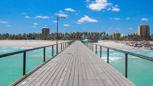
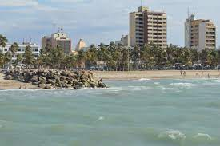
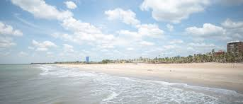

Riohacha es una ciudad al norte de Colombia, capital del departamento de lo Guajira. Es conocida como uno de los mejores atractivos en las playas de la Guajira y una de las ciudades más antiguas de Colombia. Para llegar a ella desde Santa Marta tienes que tomar la avenida troncal del Caribe, en un recorrido de tres horas aproximadamente en taxi. Esta hermosa ciudad cuenta con playas y un sin fin de construcciones arquitectónicas dignas de ver como: monumentos y panteones así como también iglesias coloniales y hasta plazas. Visita la Catedral Nuestra Señora de los Remedios que fue declarada Monumento Nacional por su imponente infraestructura. Durante el paseo por esta localidad no dejes de buscar las Rancherías Wayuu, donde te sumergirás en las tradiciones de los indígenas Wayuu, tener un poco de información y conocer de cerca sus costumbres, así como compartir todos sus platos tradicionales y bailar la danza de sus antepasados, una de las principales cosas qué hacer en Playas de La Guajira. Para seguir disfrutando de lo maravilloso de esta localidad, puedes alojarte en el Bona Vida Hostel La Quinta, perfecto para descansar y con una excelente atención personalizada, así como una ubicación ideal para seguir conociendo Riohacha.
 

Referencias
las 10 mejores playas de la Guajira